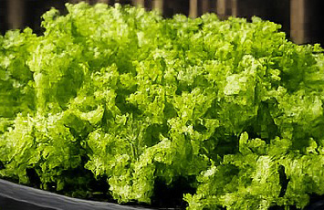
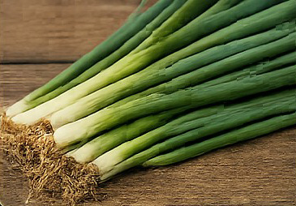
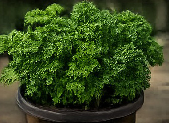
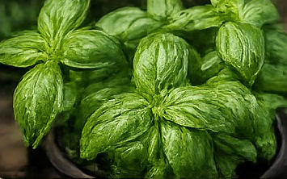

The Shamrocket Galley Garden reinforces one of the expedition's core ideas: eating simply, eating fresh, and making the most of limited space aboard a small sailing catamaran.

Rich in vitamin A and K, a good source of folate, and low in calories. It helps with hydration because it's mostly water — useful on a boat where every drop counts.
Fresh salads, a crisp topping for Dan Dogs, wraps, sandwiches, and alongside whatever fish comes fresh out of the water that day.

High in vitamins A, C, and K, plus antioxidants and sulfur compounds that support overall health. The green tops are actually more nutrient-dense than the onion bulb itself.
Chopped into Dan Dogs, sprinkled over salads, mixed into fresh catch, and used as a quick garnish for just about any meal aboard.

Extremely rich in vitamins K, C, and A, along with trace minerals like iron and potassium.
Fresh garnish for fish, lobster, and shrimp; mixed into salads and wraps; folded into Dan Dogs; and added to sauces and marinades.

Provides vitamins A, K, and C, plus antioxidants and aromatic oils that add real flavor without adding calories.
Fresh in salads, wraps, and Dan Dogs; stirred into sauces and pasta; and worked into homemade pesto or herb butter whenever the ingredients allow.